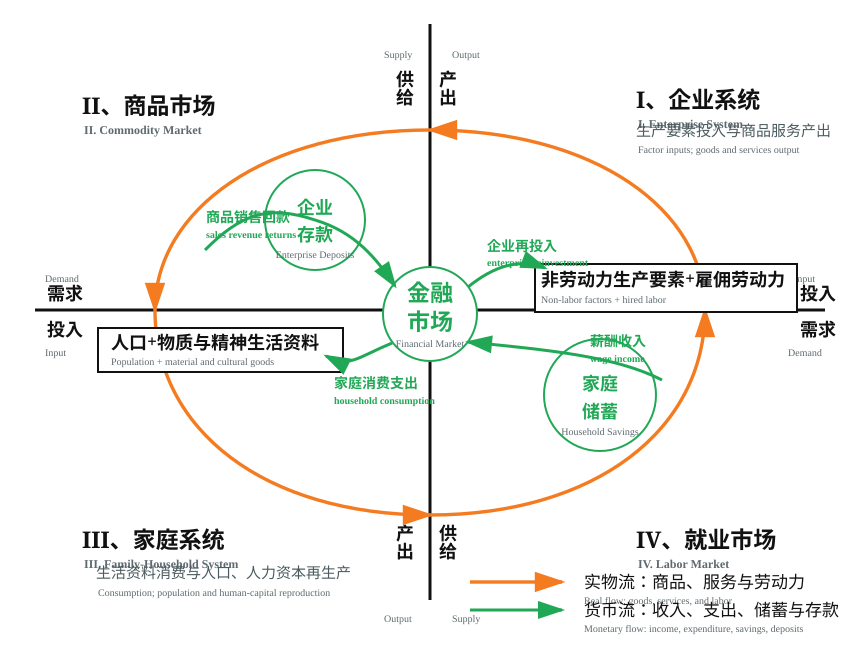
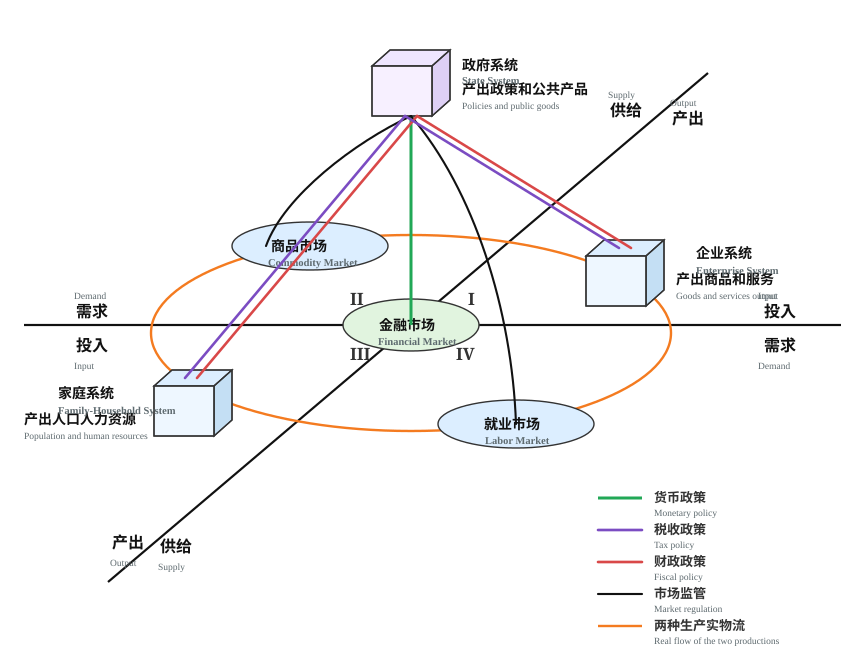

开宗明义，本站提出两个理论模型，作为《合三为一政治经济学》的理论基础和结构框架。
一、企业生产力与家庭生命力的辩证循环
第一个理论模型，以可视化几何图方式，呈现家庭与企业这两个产权和行为主体构成的“两种生产”“两种市场”“生产力与生命力”的辩证循环，旨在揭示市场经济运行的底层逻辑。

第一象限代表企业系统，内容是生产要素成本消耗与产品和服务的生产过程。这里由无数基于生产要素产权基础、追求利润最大化的竞争性企业组成，承担生产和供给商品与服务职能，推动生产力发展。
第三象限代表家庭系统（含教科文卫体），内容是人口、物质与精神生活资料消费成本，以及人的生产过程。这里由无数追求薪酬最大化和幸福感的家庭组成。生活消费本身也是人口生产和人力资源再生产过程，它以劳动力人力资本的天然私有权为产权基础，承担人口繁衍和人力资源再生产职能，推动生命力进化。
第二象限商品市场、第四象限就业市场，以金融市场和货币流为介质，实现普通商品与劳动力商品的流通。两种市场通过供求竞争配置资源，既满足企业购买生产要素以进行再生产的需要，也满足家庭购买生活资料以延续人口繁衍和人力资源再生产的需要。
相对独立又相互依存的两种生产，通过两种市场及货币流通连接起来，形成生产力与生命力的无限循环，推动人类社会在与客观世界的物质交换中不断发展。这就是市场经济运行的底层逻辑。
静态地看，市场经济机制是企业生产力与家庭生命力的平衡结构；动态地看，两者总是处于均衡与非均衡运动之中。一旦发生严重失衡，就可能导致危机乃至灾难，并以破坏性方式强制恢复平衡。
二、家庭权利、企业权利、政府权力的非对称配置与制衡
第二个理论模型，是家庭权利、企业权利、政府权力“大三权”非对称配置与制衡机制。
人类社会的组织结构经历了漫长历史演化。以工业革命为契机，现代社会发展出家庭、企业、政府三大基础组织，分别承担人口劳动力生产、生活和生产资料生产、公共产品生产三种职能。其它社会组织虽然纷繁复杂，但大多是家庭、企业、政府的派生物或附属结构。
政府目标可以概括为追求权力最大化。为此，政府必须生产和供给公共产品，维护社会秩序稳定，开辟税源，巩固税基；只有在此基础上，政府权力才可能长期稳固。

图2在第一张平面二维结构图基础上加入政府，并把政府放置在家庭、企业两个行为主体及其构建的平面市场机制之上的居中位置。这种布局并非价值偏好，而是对权力客观位置的描述。正是由于地位和性质不同，决定了政府权力与家庭权利、企业权利之间的非对称配置格局。
家庭、企业、政府三个行为主体分别对应三种生产，各有自身运行规律，但又通过商品市场、就业市场、金融市场、财政税收、转移支付、社会保障等方式紧密联系，从而实现“合三为一”，并发展出相应的思想文化和精神产品，构成现代社会政治、经济、文化制度和运行机制的基本框架。
三、三个最大化与“大三权”博弈
家庭追求基于劳动收入的幸福最大化，企业追求基于资本投入的利润最大化，政府追求基于税收财政的权力最大化。“三个最大化”是相同的人性在不同社会组织中的不同表现，构成人类社会发展的三大初始动力。
但最大化不是无限大，而只是三方的主观期望、利益诉求乃至贪念及其驱使下的行为动机。客观结果如何，取决于家庭、企业、政府各自的投入—产出、成本—收益比，更取决于三方相互竞争、相互制约的态势格局，其间充满经济人和政治人的合作博弈与非合作博弈。
在经济总量不变的前提下，家庭工资、企业利润、政府税收相互制约、此消彼长。为避免零和博弈导致社会停滞倒退，最佳解决方案是在合作博弈基础上形成“大三权”制衡格局，超越立法、行政、司法“小三权”分立与制衡，扩展为社会全域的家庭权利、企业权利、政府权力分立与制衡。
四、权利、权力与非对称制衡
中文语境中同音的“权利”与“权力”，其实是性质不同的范畴。家庭权利是基于平等价值观的生命权；企业权利是基于自由价值观的创造权；政府权力是基于国家机器的强制权。三者性质不同、不可通约，有些甚至不可量化等价交易，但彼此又相互依存、相互制约。
正因如此，“大三权”分立与制衡不是简单对称的三角关系，而是一种非对称的权利、权力配置结构与非对称制衡模式。它的运行效果，取决于置身其中的家庭、企业、政府三个行为主体相互博弈的性质和态势。
如果是合作博弈，三个最大化将被整合为社会效益最大化，构建完整统一、良性循环的社会再生产生态系统，在做大蛋糕的同时分配好蛋糕，实现家庭、企业、政府三赢。
如果是非合作博弈，则可能导致相反结果：三个最大化相互掣肘，三种生产陷入螺旋式不良循环，经济社会发展停滞甚至倒退，形成家庭、企业、政府三输。当某些关键边际变量超过临界点，就可能导致“大三权”旧结构崩溃和新结构重建，而这往往是充满痛苦、暴力乃至战争的过程。
五、核心问题：什么才是合理配置
所谓合作博弈，就是规则约束下的竞争与合作。那么，怎样才能实现三方合作博弈？答案是在法治下合理配置家庭权利、企业权利、政府权力。无论权力过大权利不足，还是权利过大权力不足，都会导致非合作博弈，破坏“大三权”均衡，从而破坏经济社会顺利发展。
例如，在公共产品供需关系中，政府即使主观上具有供给优质公共产品的愿望，公共产品优劣仍要看需求方家庭和企业的反馈。如果政府权力过大，而家庭、企业又无权拒绝不受欢迎的公共产品，就会压制和伤害家庭生命力与企业生产力。家庭、企业既是公共产品消费者，也是纳税人；权利不足导致活力和创造力下降，纳税能力也会下降。税基不稳、税源萎缩，最终损害的不仅是家庭和企业，也会使政府自身陷入困境。
因此，本文提出的问题不是简单主张“大政府”或“小政府”，也不是简单站在家庭或企业一边，而是追问：什么才是家庭权利、企业权利、政府权力的合理配置？怎样才能达到这种合理？这正是本站要持续讨论的问题。
六、理论边界与开放问题
上述两个理论模型，与主流经济学的两部门、三部门经济循环流量图在形态和内容上有相同之处，也有重大区别。本站将在后续文章中展开比较分析。
需要说明的是，上述模型主要适用于对主权国家内部权利、权力配置结构和运行机制的分析。从全球视野看，人类至今还没有建立起一个有效的世界政府，既有国际规则的适用范围和有效边界有限，地缘政治博弈在某种程度上仍遵循丛林法则，这需要另一套理论加以分析。
《道德经》曰：道生一，一生二，二生三，三生万物；万物负阴而抱阳，冲气以为和。中国和合主义不仅是“合三为一政治经济学”的哲学基础，也可能为解决国际纷争提供一条值得探索的思路。这是本站后续要讨论的另一个课题。